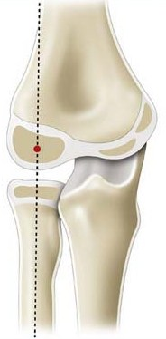
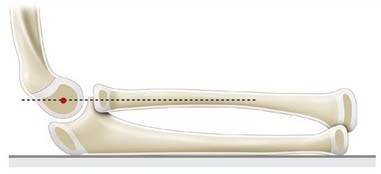
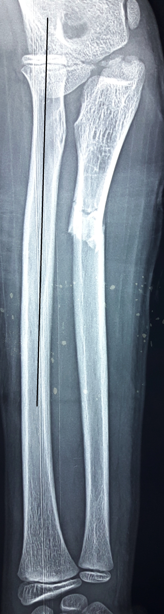
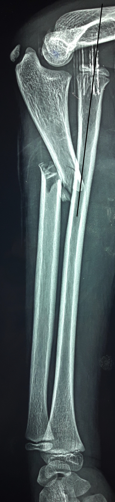
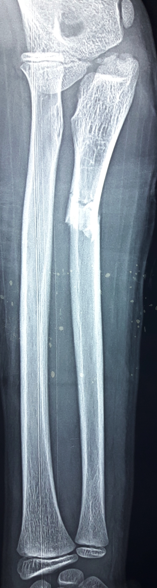
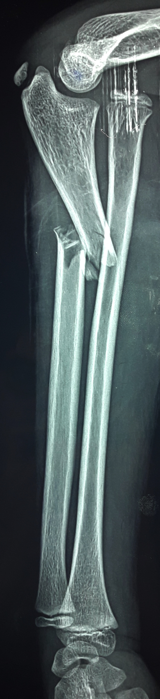
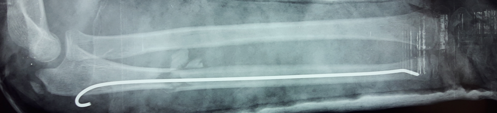

Coude
Cas Clinique 16
Enfant de 13ans , victime d’une chute de 0,5m de hauteur avec réception sur la paume de la main droite.
L’examen a trouvé
une impotence fonctionnelle du membre supérieure droit,
une déformation de l’avant-bras,
une tuméfaction du coude et
une absence de troubles vasculo-nerveux.
1. Quel bilan radiographique doit être demandé? R1
3. Rappelez la construction de STOREN, et quelle est son intérêt? R3
4.Choisissez la ou les propositions exactes:R4 C4
A- C’est une lésion MONTEGGIA de groupe I.
B- Ce type de fracture est classé en 3 groupes, selon la classification de TRILLAT.
C- Le traitement chirurgical est nécessaire pour réduire cette lésion.
D- C’est une indication à une réduction orthopédique.
5. Quel traitment proposez-vous? R5
Réponse 1
Une radiographie de l’avant-bras droit prenant coude et poignet.
Réponse 3
La construction de STOREN: Sur une radio du coude de face et de profil, l’axe longitudinal du radius doit toujours passer par le centre du point condylien externe de l’humérus, quel que soit le degré de flexion du coude. Elle permet ainsi, de chercher une luxation de la tête radiale (fig5,fig6).


Réponse 2
Fracture déplacée du membre supérieur droit du tiers supérieur de l’ulna associé à une luxation de la tête radiale = lésion de MONTEGGIA.


Réponse 4
A B D


Réponse 5
Réduction avec embrochage percutané descendant par une broche de Kirschner avec mise en place d'un plâtre brachio-antébrachio-palmaire. (fig7)

Commentaire 5
80% à 90% des cas sont accessibles au traitement orthopédique.
Quel que soit le type de lésion MONTEGGIA, la réduction du cubitus est primordiale.
Une fois la fracture du cubitus réduite, la tête radiale doit revenir spontanément à sa place. Il faut alors d'une part tester la stabilité de la réduction du cubitus, d'autre part tester la réduction et la stabilité de la tête radiale. Le traitement sera alors orthopédique pur. L'immobilisation plâtrée assurant la contention jusqu'à cicatrisation des lésions. Ailleurs l'ostéosynthèse du cubitus et l'abord de la tête radiale sont nécessaire, sans pour cela assombrir le pronostic fonctionnel final.
Commentaire 1
Commentaire 2
Commentaire 3
La lésion de MONTEGGIA représente 2% des fractures de l’avant bras de l’enfant. Le piège de cette lésion est la méconnaissance de la luxation de la tête radiale. Par conséquent la construction de STOREN doit être faite systématiquement.
La lésion de MONTEGGIA se décompose en trois groupes selon la classification de TRILLAT:
Groupe I: luxation de la tête radiale quel que soit son déplacement avec fracture diaphysaire du cubitus
Groupe II: luxation de la tête radiale quel que soit son déplacement avec fracture métaphyso-épiphysaire du cubitus
Groupe III: luxation de la tête radiale quel que soit son déplacement avec fracture du cubitus(quel que soit son siège) et avec une fracture de l’humérus ou du radius ( fracture complète de la tête ou de la diaphyse) ou fracture du poignet.
Commentaire 4
90% des lésions MONTEGGIA sont accessibles au traitement orthopédique. Quel que soit le type de lésion récente, la réduction du cubitus est primordiale.
Une fois la fracture du cubitus réduite, la tête radiale doit revenir spontanément en place. Il faut alors, d’une part, tester la réduction et la stabilité du cubitus, d’autre part, tester celles de la tête radiale. Le traitement sera alors orthopédique pur, si les deux lésions sont réduites et stables. Ailleurs l’ostéosynthèse du cubitus et l’abord de la tête radiale seront nécessaires.
Références
Marquis CP, Cheung G, Dwyer J, Frederick D, Emery G. Supracondylar fractures of the humerus.
Current Orthopaedics 2008; 22:62-69.Lahyaoui L.. Les fractures supracondyliennes de l’humérus chez l’enfant (à propos de 370 cas)
Thèse de médecine Fès 2010,n°74.Mohammed S et Rymaszewski LA. Supracondylar fractures of the distal humerus in children.
Injury 1995;26:487-9.Parmaksizoglu AS, Ozkaya u, Bilgili F, Sayan E, Kabukcuoglu Y. Closed reduction of the pediatric supracondylar humerus fractures: the “joystick” method. Arch Orthop Trauma Surg 2009;129:1225-31.